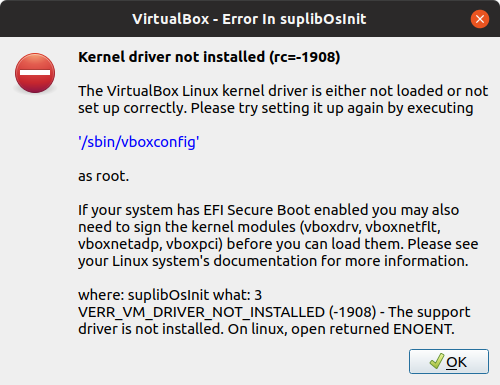

Troubleshooting¶
Should this section not cover an error you encounter or you have something which does not match what is described below please don’t hesitate to contact us at info@projectarmstrong.hu. Remember, chasing something which is out-of-scope is not productive.
VirtualBox: E_INVALIDARG (0x80070057)¶
This error message usually encountered during importing the virtual machine. It is an unresolved error. Please try to reboot your machine after installing operating system updates. If the error is persistent, please contact us.
VirtualBox: VERR_NEM_VM_CREATE_FAILED¶
There are mainly two reasons for this:
VT-x/AMD-V is not enabled: please reboot your machine and enter BIOS. Check that you have
VT-x/AMD-Venabled.Running on Windows Hyper-V is enabled: you need to disable Hyper-V. Follow the instructions described here.
VirtualBox: VERR_VM_DRIVER_NOT_INSTALLED¶
Encountered on Ubuntu 19.04. This is a very unlikely and unfortunate situation.
{kind=link}
Drop to console and run the following command:
$ sudo /sbin/vboxconfig
The command is expected to fail and prints something like this:
vboxdrv.sh: failed: Look at /var/log/vbox-setup.log to find out what went wrong.
Now look into the log file and try to find the first error message:
$ cat /var/log/vbox-setup.log | grep -m1 "error:"
If the error message is something like error: unknown type name ‘__uint128_t’
or very similar it might mean that you have to install Linux kernel headers.
You can check it by running the command below.
$ ls /usr/src/linux-headers-$(uname -r) >/dev/null
ls: cannot access '/usr/src/linux-headers-5.0.0-38-generic': No such file or directory
If it says so like above you should install the missing headers:
$ sudo apt-get install linux-headers-$(uname -r)
Now try to configure VirtualBox® once again:
$ sudo /sbin/vboxconfig
It should succeed this time and your system is ready to run the development environment.
VirtualBox: Appliance import failed¶
If for some reason the import of the appliance (.ova) file failed because
some other reasons than the ones discussed above, you can still try to add
the virtual machine image manually. To do this, first you have to download
the image using
this torrent.
Unpack its content and you will have an arm_hackathon folder with several
files inside.
Start VirtualBox® and click Machine -> Add... or press CTRL+A.
Select the arm_hackathon.vbox file from the previously mentioned
arm_hackathon folder. Click Open.
A new virtual machine arm_hackathon will be created.